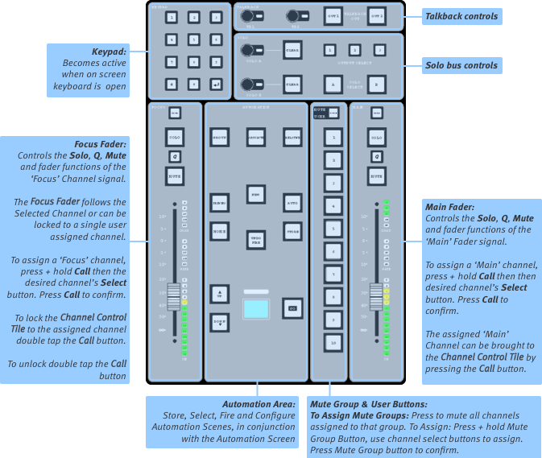
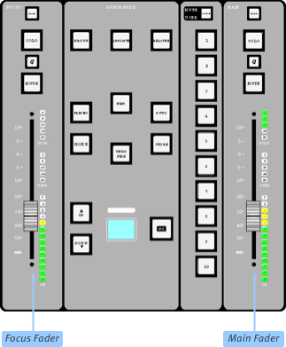

Master Tile
The Master Tile is used to perform the global functions summarised in the illustration below:

Keypad
The keypad in the top left can be used to enter numeric values; the return key duplicates the OK button in the on-screen keypads. The keys can also be assigned to User Keys; see User Key Options for configuration details.

Main Fader
The fader on the right of the Master Tile can be assigned to any input or output channel on the console, providing constant control of that channel's level regardless of whether the channel is active in a Fader Tile or not. Typically this would be used for one of the Master Buses, or possibly the lead vocal or solo wedge level. It might also be assigned to a VCA which in turn controls a selection of buses, for example.
To assign a channel to the Main Fader:
Bring the Bank containing the channel to be assigned into a Fader Tile;
Press & hold the Call button above the Main Fader until it flashes cyan. The currently assigned channel's Select button will also flash;
Now press the Select button for the channel you wish to assign to it – it will flash cyan while the old assignment will stop flashing;
Press Call again to disengage the assign function.
Focus Fader
The Focus fader, along with its associated Mute, Q and Solo buttons and the Quick Controls in the bottom left corner of the Control Tile (if fitted) always operate on the 'Focused' path.
The Focus Fader normally follows the Selected path, but it can also be 'assigned' to a specific path. This could be an important Input Channel, VCA, Solo Channel, additional Master etc. that you need quick access to.
The Focus Fader is assigned by the same method as the Main Fader (press & hold Focus Fader's Call button then Select path, press Call to confirm selection).
To quickly access the assigned path, press the Focus Fader's CALL button once.
The Focus Fader can also be locked to the assigned path. To do this double tap the CALL button and it will go green. Double tap CALL again to return to normal operation.
Mute & User Keys
The Mute/User keys can be toggled between Mute Groups or User keys using the MODE button. To find out more about Mute Groups please see Mute & Mute Groups.
The User Keys are user-definable and can be configured in User Key Options.